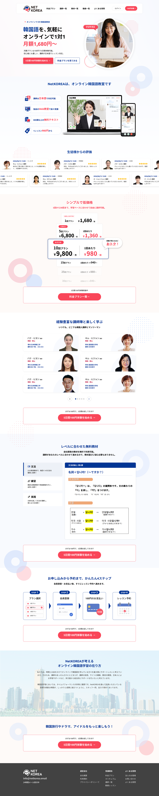
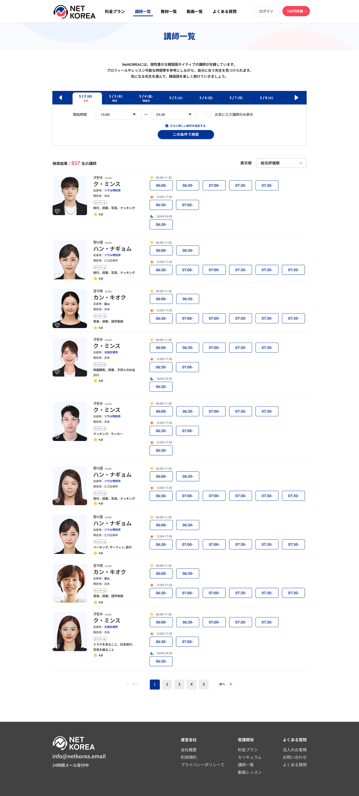
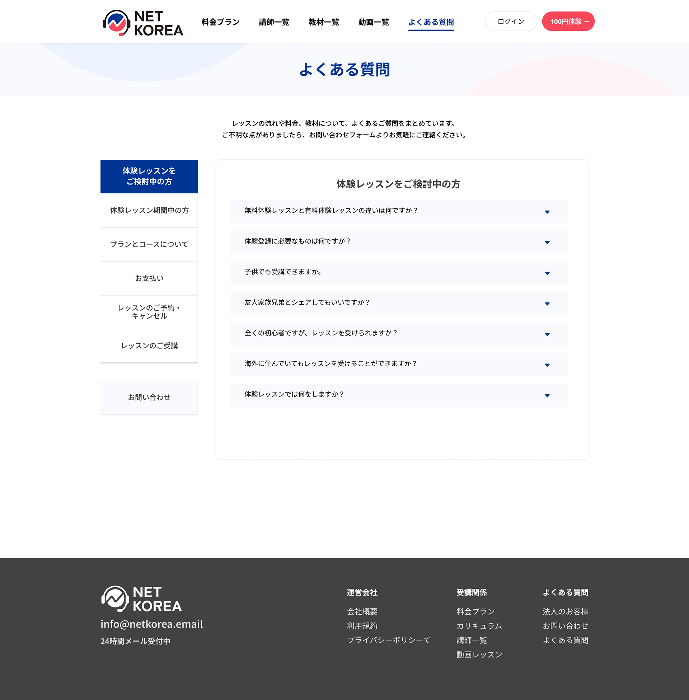
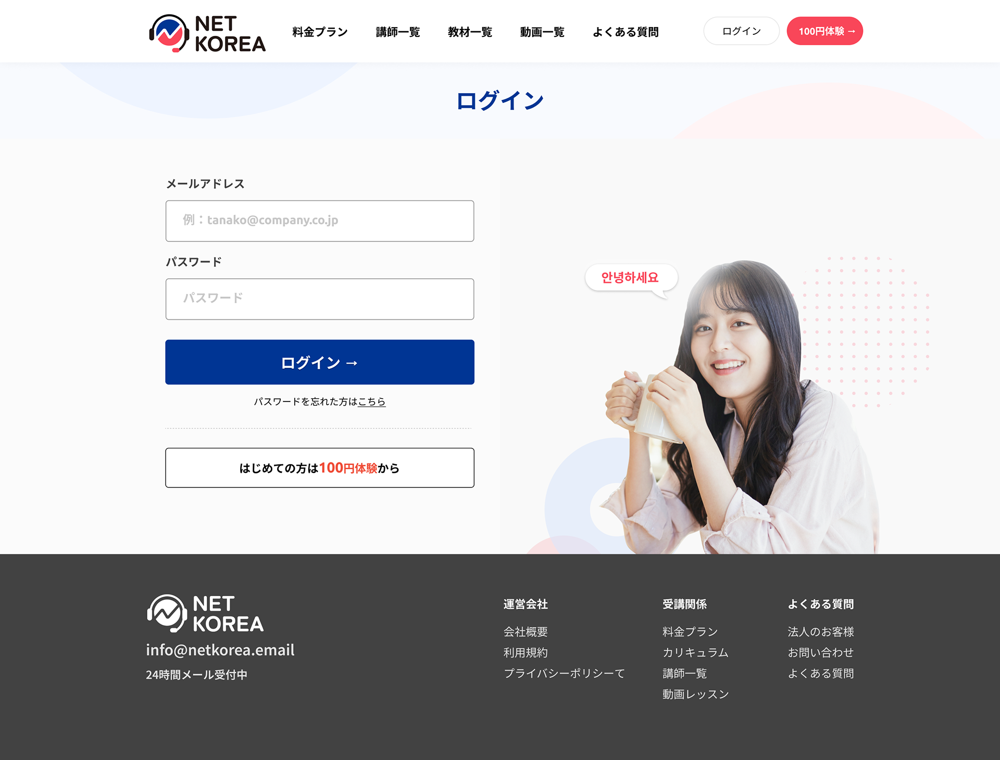
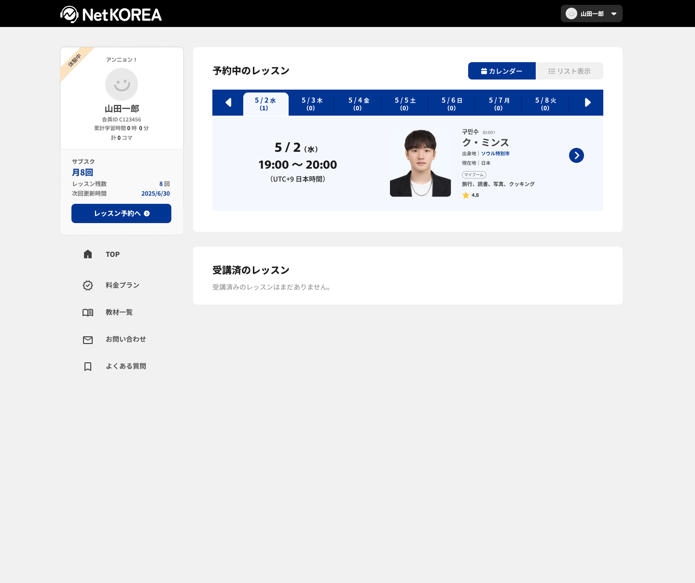
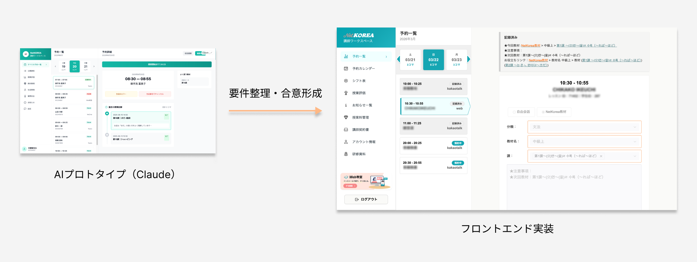

A one-to-one online Korean learning service for learners in Japan, featuring accessible pricing for beginners and lessons with instructors who can provide support in Japanese.
The redesign is complete and live. This case study presents the designs created for the relaunch.
Building on the shared BizCHINA foundation, I redesigned the experience for Korean learners, from service discovery and instructor search to booking and the learner dashboard. The redesigned service is now live.
The homepage brings pricing, instructors, materials and the sign-up process together, with clear entry points to a trial lesson.

Instructor profiles and available time slots appear together. Search filters help learners find an instructor and time that suit them.

Questions about trials, pricing and bookings are grouped by category so learners can find the information they need.

The login screen provides entry points for returning learners and first-time visitors interested in a trial.

The learner dashboard brings upcoming lessons, the current plan and remaining lessons together with the next actions.

I used AI tools — including Claude — to speed up prototyping, organize requirements, and prepare for stakeholder meetings. This helped me move faster from design to a spec that developers could work with. In a small team, it made a real difference in how quickly we could iterate.

The redesign is complete and live. This case study presents the designs created for the relaunch.